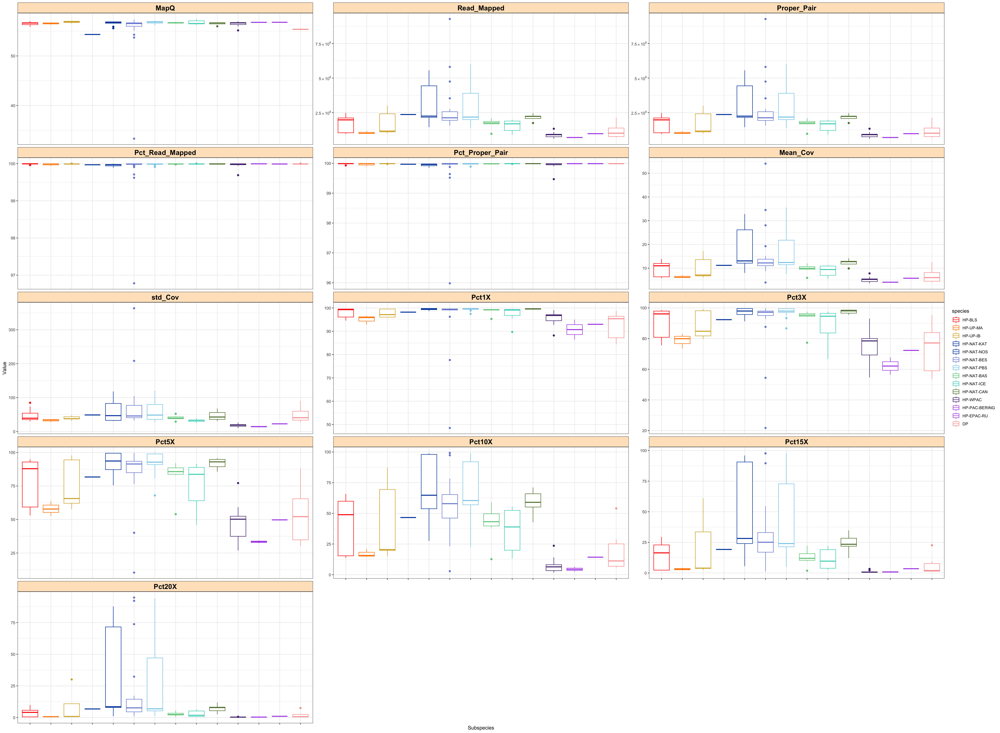

Code
setwd("/Users/yacinebenchehida/Desktop/porpoise_stuff/2025-2026")
dat = read.table("untitled folder/species.txt", comment.char = "")
colnames(dat) = c("ID","Species","Couleur")
datThis notebook presents a complete workflow for assessing the quality of Illumina whole-genome sequencing data generated for harbour porpoise and Dall’s porpoise populations. The objective is to evaluate the mapping quality of each sample, extract key quality control metrics, and visualise these statistics across individuals and populations.
The workflow integrates three main components:
Running Qualimap bamqc, used to compute mapping quality metrics, coverage statistics, and alignment summaries for each BAM file.
Automated extraction of QC metrics by parsing Qualimap reports and compiling the resulting values into structured text files.
Visualisation in R of mapping quality metrics and coverage distribution across individuals and populations.
Together, these steps provide a summary of mapping performance across the dataset used in X et al. 2026. The resulting plots allow rapid identification of low-quality samples, comparison of sequencing depth across groups, and verification of mapping consistency prior to downstream genomic analyses.
setwd("/Users/yacinebenchehida/Desktop/porpoise_stuff/2025-2026")
dat = read.table("untitled folder/species.txt", comment.char = "")
colnames(dat) = c("ID","Species","Couleur")
datdf_counts = as.data.frame(table(dat[2]))
df_countsThis section shows the Slurm script used to run Qualimap bamqc on each BAM file. The command computes mapping quality metrics, alignment statistics, and coverage summaries that we will use in downstream visualization.
#!/bin/bash
#SBATCH --time=25:00:00
#SBATCH --nodes=1
#SBATCH --ntasks=1
#SBATCH --cpus-per-task=8
#SBATCH --mem=15G
#SBATCH --account=BIOL-SPECGEN-2018
#SBATCH --job-name=map_sort_RG_dup_merge
##################################
# 1 - Load necessar softwares #
##################################
module load bio/Qualimap/2.2.1-foss-2019b-R-3.6.2
###########################################
# 2 - check mapping quality with qualimap #
###########################################
mkdir -p $path_results/2_Qualimap/"$1"
qualimap bamqc --java-mem-size=20G \
-bam $path_results/1_sorted_dedup_bam/$1/"$1"_sorted_dedup.bam \
-c \
-gd HUMAN \
-nt 8 \
-outdir $path_results/2_Qualimap/"$1" \
-outformat HTML
# Set working directory for collecting Qualimap summary files
WD="/Users/yacinebenchehida/Desktop/porpoise_stuff/2025-2026"
cd "/Users/yacinebenchehida/Desktop/porpoise_stuff/2025-2026/qualimap"
# Remove previous output files to ensure a clean re-run
rm ../MapQ.txt
rm ../Read_mapped.txt
rm ../Pct_read_mapped.txt
rm ../Mean_Cov.txt
rm ../std_Cov.txt
rm ../Pct_1X.txt
rm ../Pct_3X.txt
rm ../Pct_5X.txt
rm ../Pct_10X.txt
rm ../Pct_15X.txt
rm ../Pct_20X.txt
rm ../Pct_Proper_Pair.txt
rm ../Proper_Pair.txt
# Loop over all sample directories produced by Qualimap
for i in *
do cd $i
# Extract mean mapping quality
echo -e $i"\t"$(cat genome_results.txt | grep "mean mapping quality" | awk '{print $5}')"\tMapQ" >> $WD/MapQ.txt
# Extract number of mapped reads
echo -e $i"\t"$(cat genome_results.txt | grep "number of mapped reads" | perl -pe 's/,//g' | awk '{print $6}')"\tRead_Mapped" >> $WD/Read_mapped.txt
# Extract percent of mapped reads
echo -e $i"\t"$(cat genome_results.txt | grep "number of mapped reads" | perl -pe 's/,//g' | awk '{print $7}' | perl -pe 's/\((\w+)(\.)(\w+)%\)/$1$2$3/g' | perl -pe 's/\(100%\)/100/g')"\tPct_Read_Mapped" >> $WD/Pct_read_mapped.txt
# Extract properly paired read count
echo -e $i"\t"$(cat genome_results.txt | grep "number of mapped paired reads (both in pair)" | perl -pe 's/,//g' | awk '{print $10}')"\tProper_Pair" >> $WD/Proper_Pair.txt
# Compute percent of reads in proper pairs
echo -e $i"\t"$(cat genome_results.txt | perl -pe 's/,//g' | awk '/number of mapped paired reads \(both in pair\)/{both=$10} /number of reads =/{total=$5} END{printf "%.2f", (both/total)*100}')"\tPct_Proper_Pair" >> $WD/Pct_Proper_Pair.txt
# Extract mean coverage
echo -e $i"\t"$(cat genome_results.txt | grep "mean coverageData" | perl -pe 's/X//g' | awk '{print $4}')"\tMean_Cov" >> $WD/Mean_Cov.txt
# Extract std coverage
echo -e $i"\t"$(cat genome_results.txt | grep "std coverageData" | perl -pe 's/X//g' | awk '{print $4}')"\tstd_Cov" >> $WD/std_Cov.txt
# Extract coverage thresholds
echo -e $i"\t"$(cat genome_results.txt | grep "coverageData >= 1X" | perl -pe 's/%//g' | awk '{print $4}')"\tPct1X" >> $WD/Pct_1X.txt
echo -e $i"\t"$(cat genome_results.txt | grep "coverageData >= 3X" | perl -pe 's/%//g' | awk '{print $4}')"\tPct3X" >> $WD/Pct_3X.txt
echo -e $i"\t"$(cat genome_results.txt | grep "coverageData >= 5X" | perl -pe 's/%//g' | awk '{print $4}')"\tPct5X" >> $WD/Pct_5X.txt
echo -e $i"\t"$(cat genome_results.txt | grep "coverageData >= 10X" | perl -pe 's/%//g' | awk '{print $4}')"\tPct10X" >> $WD/Pct_10X.txt
echo -e $i"\t"$(cat genome_results.txt | grep "coverageData >= 15X" | perl -pe 's/%//g' | awk '{print $4}')"\tPct15X" >> $WD/Pct_15X.txt
echo -e $i"\t"$(cat genome_results.txt | grep "coverageData >= 20X" | perl -pe 's/%//g' | awk '{print $4}')"\tPct20X" >> $WD/Pct_20X.txt
cd ..
done##############################
# Create scientific notation #
##############################
scientific_10 <- function(x) {
ifelse(x > 1000,
parse(text = gsub("e\\+*", " %*% 10^", scales::scientific_format()(x))),
x)
}
#########################
# Set working directory #
#########################
setwd("/Users/yacinebenchehida/Desktop/porpoise_stuff/2025-2026")
############################################
# Import and prepare the data for plotting #
############################################
data = system("cat *txt",intern = TRUE) # read all extracted metrics
data = strsplit(data,"\t", fixed = TRUE)
data = do.call(rbind,data)
data = as.data.frame(data)
colnames(data) = c("Sample","Value","Statistics")
data$Value = as.numeric(data$Value)
species = read.table("untitled folder/species.txt") # reference species table
data$species = "ToBeAdded"
###################################################
# Assign the good reference genome to each sample #
###################################################
for (i in 1:dim(species)[1]){
for (j in 1:dim(data)[1]){
if (species[i,1] == data[j,1]) {
data[j,4] = species[i,2]
}
}
}
###############################
# Set subspecies order (fixed) #
###############################
ssp_order <- c(
"HP-BLS", "HP-UP-MA", "HP-UP-IB", "HP-NAT-KAT", "HP-NAT-NOS",
"HP-NAT-BES", "HP-NAT-PBS", "HP-NAT-BAS", "HP-NAT-ICE", "HP-NAT-CAN",
"HP-WPAC", "HP-PAC-BERING", "HP-EPAC-RU", "DP"
)
data$species <- as.character(data$species)
data$species <- factor(data$species, levels = ssp_order)
########################################
# Load species colours from metadata #
########################################
color_ref = as.data.frame(unique(dat[,c(2,3)]))
colnames(color_ref) = c("species","color")
color_ref$species = as.character(color_ref$species)
data$col = "ToBeAdded"
###########################################
# Assign the color to use for each sample #
###########################################
for (i in 1:dim(color_ref)[1]){
for (j in 1:dim(data)[1]){
if (color_ref[i,1] == data[j,4]) {
data[j,5] = color_ref[i,2]
}
}
}
color_code = color_ref
###############################################
# Final polishing before generating the plots #
###############################################
data = with(data, data[order(species),]) # reorder lines by species
data$Sample <- factor( # reorder samples
data$Sample,
levels = rev(unique(with(data, data[order(species),1])))
)
data$Statistics <- factor( # enforce stats order
data$Statistics,
levels = c("MapQ","Read_Mapped","Proper_Pair","Pct_Read_Mapped",
"Pct_Proper_Pair","Mean_Cov","std_Cov",
"Pct1X","Pct3X","Pct5X","Pct10X","Pct15X","Pct20X")
)
##############################
# species palette #
##############################
pal_species <- color_ref$color[match(levels(data$species), color_ref$species)]
##############################
# y-axis sample colours #
##############################
map_samp <- unique(data[, c("Sample","col")])
map_samp$Sample <- factor(map_samp$Sample, levels = levels(data$Sample))
map_samp <- map_samp[order(map_samp$Sample), ]
col_y <- as.character(map_samp$col)
data_std = subset(data, data$Statistics == "std_Cov")
#################
# Lollipop plot #
#################
ggplot(data = data, aes(x = Value, y = Sample, color = species)) +
theme_Publication() +
geom_point(size = 2) +
scale_color_manual(values = pal_species) +
geom_segment(aes(x = 0, xend = Value, y = Sample, yend = Sample, color = species),
size = 0.5, linetype = "dashed") +
facet_grid(. ~ Statistics, scales = "free_x") +
theme(axis.text.y = element_text(colour = col_y, face = "bold")) +
theme(axis.text.x = element_text(angle = 45, hjust = 1)) +
theme(panel.grid.major.y = element_blank()) +
theme_bw() +
theme(strip.background = element_rect(fill = "bisque1")) +
theme(strip.text.x = element_text(size = 13)) +
scale_x_continuous(labels = scientific_10)
A few conclusions:
The mapping quality and the percentage of mapped reads are generally consistent across samples, with most individuals showing MQ > 55 and > 95 percent of reads mapped.
As expected, sequencing depth varies substantially among samples. Coverage ranges from 3.6X to 54X, with a mean of 11.9X and a standard deviation of 7.9X (inflated by the higher depth samples from Clemin et al. 2023).
Two samples from Clemin et al. 2023 require further attention:
A2016-05680: This individual belongs to HP-NAT-BES. Its mapping statistics raise concern: mapping quality is low (MQ = 33), mean coverage is only 3.9X, coverage variance is extremely high, and just 48 percent of the genome reaches at least 1X. These patterns suggest a technical issue during library preparation, sequencing, mapping, or possibly contamination. This sample should likely be excluded from downstream analyses.
5013: This HP-NAT-BES sample. It has only 77 percent of the genome covered at 1X. Such incomplete coverage may introduce noise in downstream analyses. Given the large number of HP-NAT-BES individuals already available, this sample contributes little additional information, and excluding it would avoid potential artefacts without reducing population representation.
# define species order
data$species = factor(data$species, levels = ssp_order)
# define color palette
couleur = pal_species
# boxplot of mapping statistics per subspecies
ggplot(data = data, aes(x = species, y = Value, color = species)) +
theme_Publication() +
geom_boxplot() +
scale_color_manual(values = couleur) +
facet_wrap(Statistics ~ ., scales = "free_y", ncol = 3) +
theme_bw() +
theme(
strip.text.x = element_text(size = 10, face = "bold", colour = "black"),
strip.text.y = element_text(size = 10, face = "bold", colour = "black"),
axis.text.x = element_blank(),
strip.background = element_rect(fill = "bisque1")
) +
theme(strip.text.x = element_text(size = 15)) +
scale_y_continuous(labels = scientific_10) +
xlab("Subspecies")
=> Most populations, except those in the North Pacific, have at least 50 percent of their genome covered at 5X.
# compute summary stats for mean coverage per subspecies
data[data$Statistics == "Mean_Cov", ] %>%
group_by(species) %>%
dplyr::summarize(
Mean = mean(Value, na.rm = TRUE),
Sd = sd(Value, na.rm = TRUE)
)